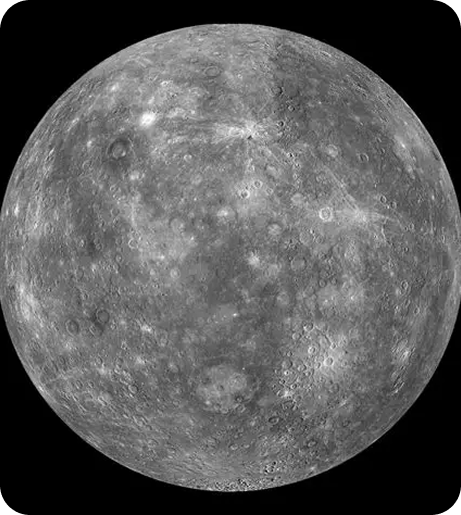

Mercury
The smallest and closest planet to the Sun. With no atmosphere to retain heat, its temperature swings between extreme hot and cold conditions. Mercury has no moons.


Our Solar System is home to a variety of fascinating worlds, each
unique in its composition, atmosphere, and history. From the rocky
inner planets to the distant gas and ice giants, every planet tells
part of the story of our cosmic neighborhood.
.png)
The smallest and closest planet to the Sun. With no atmosphere to retain heat, its temperature swings between extreme hot and cold conditions. Mercury has no moons.
Often called Earth's twin, Venus is covered by thick clouds of carbon dioxide, creating a runaway greenhouse effect. It's the hottest planet, with temperatures over 450°C.
Our home planet — the only known world with life. Earth’s balanced atmosphere and abundant water make it uniquely habitable. It has one moon.
Known as the Red Planet, Mars has volcanoes, canyons, and evidence of ancient water. It has two small moons, Phobos and Deimos.
The largest planet, famous for its Great Red Spot — a storm lasting for centuries. Jupiter has over 90 moons and spins rapidly, completing a day in 10 hours.
Renowned for its spectacular rings made of ice and rock. Saturn is a gas giant with more than 140 moons and a very short day of 10.7 hours.
An ice giant with a blue-green hue caused by methane. It rotates on its side, making its seasons extreme. Uranus has 27 known moons.
The farthest planet, deep blue and windy, with storms faster than any in the Solar System. Neptune has 14 moons and a frigid atmosphere.
The Solar System is a vast and dynamic collection of worlds — from the scorching surface of Mercury to the icy plains of Pluto. Each planet and dwarf planet adds to our understanding of how planets form, evolve and sustain unique environments in the cosmic expanse.
Once the ninth planet, Pluto is now classified as a dwarf planet. It has a frozen surface and five moons, the largest being Charon.
Eris is one of the most massive dwarf planets in our Solar System. Located far beyond Pluto, it has a highly reflective surface covered in frozen methane and takes over 500 years to orbit the Sun.
Haumea has an unusual elongated shape and rotates extremely fast — once every four hours. It is located in the Kuiper Belt and has two small moons.
Makemake is another Kuiper Belt object, slightly smaller than Pluto. It has a bright, icy surface and a very cold atmosphere, with temperatures dropping below −240°C.